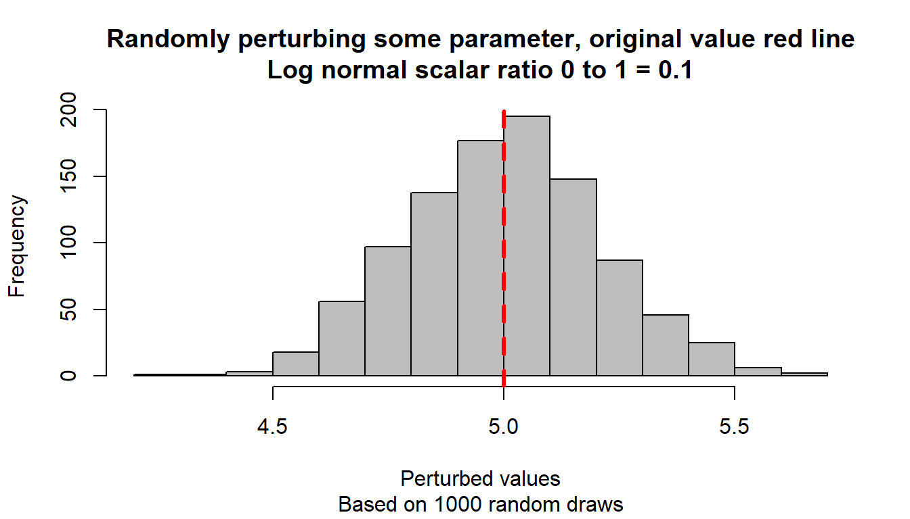
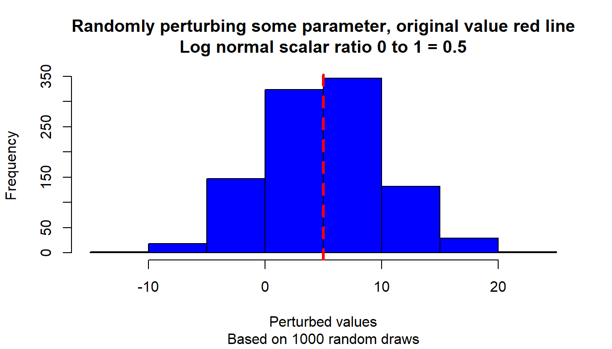
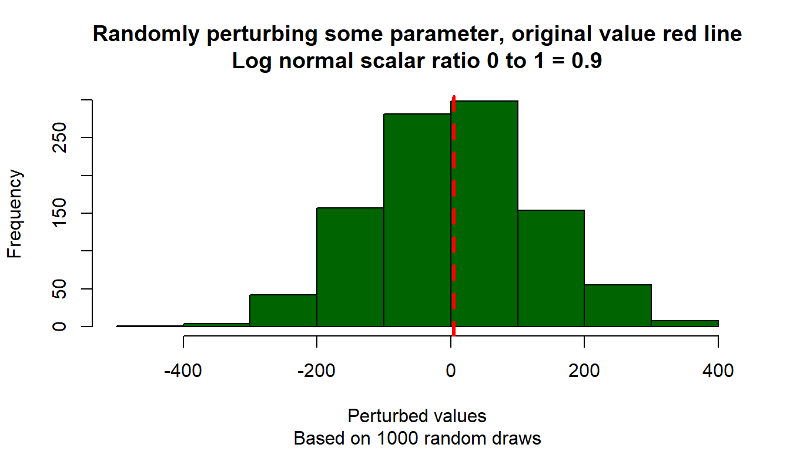
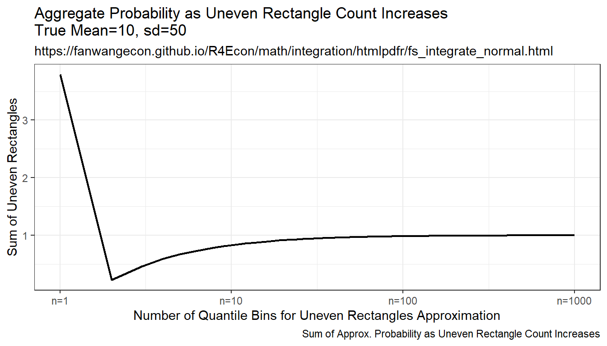
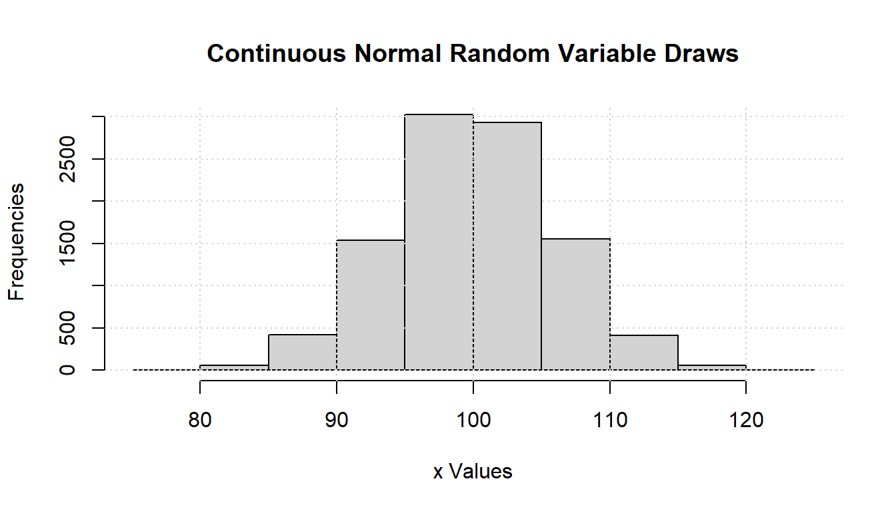
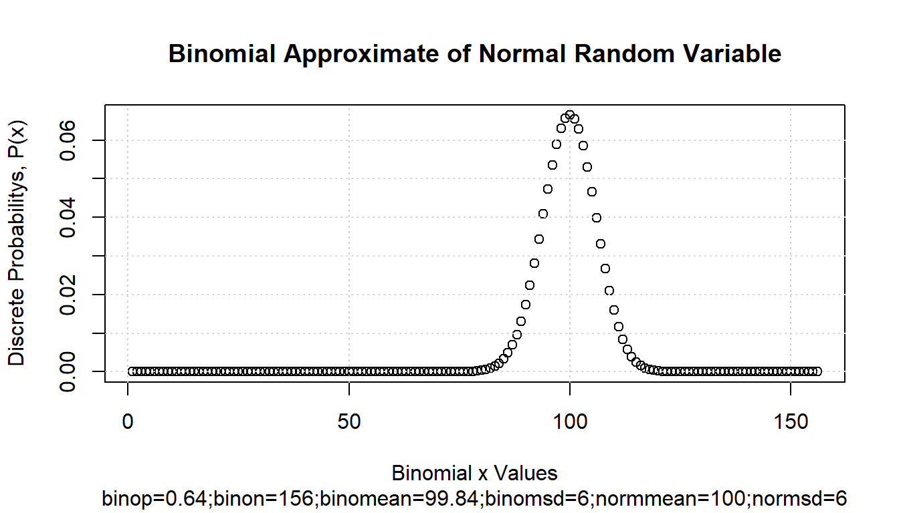

Chapter 9 Statistics
9.1 Random Draws
9.1.1 Randomly Perturbing a Parameter
Go back to fan’s REconTools research support package, R4Econ examples page, PkgTestR packaging guide, or Stat4Econ course page.
9.1.1.1 Perturbation Normally with Log-Normal Magnitude Scaling Value
During estimation, we have some starting estimation parameter value. We want to do multi-start estimation by perturbing initial starting points. The perturbing process follows the rules specified below, implemented in the function below.
- Select from 0 to 1, 0 closest to the existing parameter value, 1 very far from it.
- Log normal distribution with 1st quartile = 0.185, and mu of normal = 0. The value from (1) correspond to a cumulative mass point of this log normal distribution.
- Draw a value randomly from standard normal
- Transform the randomly drawn value to current parameter scale with inverse z-score, the resulting value is the parameter of interest.
Test and implement the ideas above.
# Step 0
ar_fl_original_param <- c(-100, -10, -1, -0.1, 0, 0.1, 1, 10, 100)
ar_fl_original_param <- c(-10, -0.1, 0, 0.1, 10)
# Step 1
ar_zero_to_one_select <- seq(1e-3, 1 - 1e-3, length.out = 11)
# Step 2
# Assume mean of normal = 0, with sdlog = 2, 25th percentile is 0.185
fl_sdlog <- 2.5
fl_p25_logn <- qlnorm(0.25, meanlog = 0, sdlog = fl_sdlog)
# Step 3
# random draw, for now fix at positive number, which means to "randomly" expand
fl_draw_znorm <- 1
# Step 4
mt_collect <- matrix(
data = NA,
nrow = length(ar_zero_to_one_select),
ncol = length(ar_fl_original_param)
)
it_col_ctr <- 0
for (fl_original_param in ar_fl_original_param) {
it_col_ctr <- it_col_ctr + 1
# inverse z-score
ar_logn_coef_of_var <- qlnorm(1-ar_zero_to_one_select, meanlog = 0, sdlog = fl_sdlog)
ar_logn_sd <- fl_original_param/ar_logn_coef_of_var
ar_param_perturbed <- fl_draw_znorm * ar_logn_sd + fl_original_param
# fill matrix
mt_collect[, it_col_ctr] <- (ar_param_perturbed)
}
# Out to table
ar_st_varnames <- c("zero_one_scalar", paste0("ori_val=", ar_fl_original_param))
# Combine to tibble, add name col1, col2, etc.
tb_collect <- as_tibble(cbind(ar_zero_to_one_select, mt_collect)) %>%
rename_all(~ c(ar_st_varnames))
# Display
kable(tb_collect) %>% kable_styling_fc()| zero_one_scalar | ori_val=-10 | ori_val=-0.1 | ori_val=0 | ori_val=0.1 | ori_val=10 |
|---|---|---|---|---|---|
| 0.0010 | -10.00441 | -0.1000441 | 0 | 0.1000441 | 10.00441 |
| 0.1008 | -10.41068 | -0.1041068 | 0 | 0.1041068 | 10.41068 |
| 0.2006 | -11.22616 | -0.1122616 | 0 | 0.1122616 | 11.22616 |
| 0.3004 | -12.70326 | -0.1270326 | 0 | 0.1270326 | 12.70326 |
| 0.4002 | -15.31489 | -0.1531489 | 0 | 0.1531489 | 15.31489 |
| 0.5000 | -20.00000 | -0.2000000 | 0 | 0.2000000 | 20.00000 |
| 0.5998 | -28.81508 | -0.2881508 | 0 | 0.2881508 | 28.81508 |
| 0.6996 | -46.99235 | -0.4699235 | 0 | 0.4699235 | 46.99235 |
| 0.7994 | -91.55561 | -0.9155561 | 0 | 0.9155561 | 91.55561 |
| 0.8992 | -253.49612 | -2.5349612 | 0 | 2.5349612 | 253.49612 |
| 0.9990 | -22665.67969 | -226.6567969 | 0 | 226.6567969 | 22665.67969 |
Implement the above idea with a function.
ffi_param_logn_perturber <- function(
param_original=5, scaler_0t1=0.5,
it_rand_seed=1, fl_sdlog=2.5, fl_min_quantile=1e-3) {
#' @param float original current parameter value to be perturbed
#' @param scaler_0t1 float, must be between 0 to 1, 0 means don't scale much, 1 mean a lot
#' @param it_rand_seed integer randomly sperturbing seed
#' @param fl_sdlog float the sdlog parameter
#' @param fl_min_quantile float minimum quantile point (and 1 - max) to allow for selecting 0 and 1 for scalar_0t1
# Draw randomly
set.seed(it_rand_seed)
fl_draw_znorm <- rnorm(1)
# logn value at quantile
scaler_0t1 <- scaler_0t1*(1-fl_min_quantile*2) + fl_min_quantile
logn_coef_of_var <- qlnorm(1-scaler_0t1, meanlog = 0, sdlog = fl_sdlog)
# Coefficient of variation
ar_logn_sd <- param_original/logn_coef_of_var
# Invert z-score
param_perturbed <- fl_draw_znorm * ar_logn_sd + param_original
return(param_perturbed)
}Test the function with differently randomly drawn parameters, and visualize.
# Start image
# Loop over different scalars
param_original <- 5
ar_scaler_0t1 <- c(0.1, 0.5, 0.9)
ar_color_strs <- c("gray", "blue", "darkgreen")
it_scalar_ctr <- 0
for (scaler_0t1 in ar_scaler_0t1) {
it_scalar_ctr <- it_scalar_ctr + 1
# Generate differently perturbed parameters
ar_param_perturbed <- c()
for (it_rand_seed in seq(1, 1000)) {
param_perturbed <- ffi_param_logn_perturber(
param_original, scaler_0t1, it_rand_seed=it_rand_seed)
ar_param_perturbed <- c(ar_param_perturbed, param_perturbed)
}
# Line through origin
par(mfrow = c(1, 1))
hist(ar_param_perturbed, col = ar_color_strs[it_scalar_ctr],
ylab = "", xlab = "", main = "")
# Original parameter line
abline(
v = param_original,
col = "red", lwd = 3, lty = 2
)
# Titles
title(
main = paste0(
"Randomly perturbing some parameter, original value red line\n",
"Log normal scalar ratio 0 to 1 = ", scaler_0t1
),
sub = paste0(
"Based on 1000 random draws"
),
xlab = "Perturbed values", ylab = "Frequency"
)
}
9.2 Distributions
9.2.1 Integrate Over Normal Guassian Process Shock
Go back to fan’s REconTools research support package, R4Econ examples page, PkgTestR packaging guide, or Stat4Econ course page.
Some Common parameters
fl_eps_mean = 10
fl_eps_sd = 50
fl_cdf_min = 0.000001
fl_cdf_max = 0.999999
ar_it_draws <- seq(1, 1000)9.2.1.1 Randomly Sample and Integrate (Monte Carlo Integration)
Compare randomly drawn normal shock mean and known mean. How does simulated mean change with draws. Actual integral equals to \(10\), as sample size increases, the sample mean approaches the integration results, but this is expensive, even with ten thousand draws, not very exact.
# Simulate Draws
set.seed(123)
ar_fl_means <-
sapply(ar_it_draws, function(x)
return(mean(rnorm(x[1], mean=fl_eps_mean, sd=fl_eps_sd))))
ar_fl_sd <-
sapply(ar_it_draws, function(x)
return(sd(rnorm(x[1], mean=fl_eps_mean, sd=fl_eps_sd))))
mt_sample_means <- cbind(ar_it_draws, ar_fl_means, ar_fl_sd)
colnames(mt_sample_means) <- c('draw_count', 'mean', 'sd')
tb_sample_means <- as_tibble(mt_sample_means)
# Graph
# x-labels
x.labels <- c('n=1', 'n=10', 'n=100', 'n=1000')
x.breaks <- c(1, 10, 100, 1000)
# Shared Subtitle
st_subtitle <- paste0('https://fanwangecon.github.io/',
'R4Econ/math/integration/htmlpdfr/fs_integrate_normal.html')
# Shared Labels
slb_title_shr = paste0('as Sample Size Increases\n',
'True Mean=', fl_eps_mean,', sd=',fl_eps_sd)
slb_xtitle = paste0('Sample Size')
# Graph Results--Draw
plt_mean <- tb_sample_means %>%
ggplot(aes(x=draw_count, y=mean)) +
geom_line(size=0.75) +
labs(title = paste0('Sample Mean ', slb_title_shr),
subtitle = st_subtitle,
x = slb_xtitle,
y = 'Sample Mean',
caption = 'Mean of Sample Integrates to True Mean') +
scale_x_continuous(trans='log10', labels = x.labels, breaks = x.breaks) +
theme_bw()
print(plt_mean)
plt_sd <- tb_sample_means %>%
ggplot(aes(x=draw_count, y=sd)) +
geom_line(size=0.75) +
labs(title = paste0('Sample Standard Deviation ', slb_title_shr),
subtitle = st_subtitle,
x = slb_xtitle,
y = 'Sample Standard Deviation',
caption = 'Standard Deviation of Sample Integrates to True SD') +
scale_x_continuous(trans='log10', labels = x.labels, breaks = x.breaks) +
theme_bw()
print(plt_sd)
9.2.1.2 Integration By Symmetric Uneven Rectangle
Draw on even grid from close to 0 to close to 1. Get the corresponding x points to these quantile levels. Distance between x points are not equi-distance but increasing and symmetric away from the mean. Under this approach, each rectangle aims to approximate the same area.
Resulting integration is rectangle based, but rectangle width differ. The rectangles have wider width as they move away from the mean, and thinner width close to the mean. This is much more stable than the random draw method, but note that it converges somewhat slowly to true values as well.
mt_fl_means <-
sapply(ar_it_draws, function(x) {
fl_prob_break = (fl_cdf_max - fl_cdf_min)/(x[1])
ar_eps_bounds <- qnorm(seq(fl_cdf_min, fl_cdf_max,
by=(fl_cdf_max - fl_cdf_min)/(x[1])),
mean = fl_eps_mean, sd = fl_eps_sd)
ar_eps_val <- (tail(ar_eps_bounds, -1) + head(ar_eps_bounds, -1))/2
ar_eps_prb <- rep(fl_prob_break/(fl_cdf_max - fl_cdf_min), x[1])
ar_eps_fev <- dnorm(ar_eps_val,
mean = fl_eps_mean, sd = fl_eps_sd)
fl_cdf_total_approx <- sum(ar_eps_fev*diff(ar_eps_bounds))
fl_mean_approx <- sum(ar_eps_val*(ar_eps_fev*diff(ar_eps_bounds)))
fl_sd_approx <- sqrt(sum((ar_eps_val-fl_mean_approx)^2*(ar_eps_fev*diff(ar_eps_bounds))))
return(list(cdf=fl_cdf_total_approx, mean=fl_mean_approx, sd=fl_sd_approx))
})
mt_sample_means <- cbind(ar_it_draws, as_tibble(t(mt_fl_means)) %>% unnest())
colnames(mt_sample_means) <- c('draw_count', 'cdf', 'mean', 'sd')
tb_sample_means <- as_tibble(mt_sample_means)
# Graph
# x-labels
x.labels <- c('n=1', 'n=10', 'n=100', 'n=1000')
x.breaks <- c(1, 10, 100, 1000)
# Shared Labels
slb_title_shr = paste0('as Uneven Rectangle Count Increases\n',
'True Mean=', fl_eps_mean,', sd=',fl_eps_sd)
slb_xtitle = paste0('Number of Quantile Bins for Uneven Rectangles Approximation')
# Graph Results--Draw
plt_mean <- tb_sample_means %>%
ggplot(aes(x=draw_count, y=mean)) +
geom_line(size=0.75) +
labs(title = paste0('Average ', slb_title_shr),
subtitle = st_subtitle,
x = slb_xtitle,
y = 'Approximated Mean',
caption = 'Integral Approximation as Uneven Rectangle Count Increases') +
scale_x_continuous(trans='log10', labels = x.labels, breaks = x.breaks) +
theme_bw()
print(plt_mean)
plt_sd <- tb_sample_means %>%
ggplot(aes(x=draw_count, y=sd)) +
geom_line(size=0.75) +
labs(title = paste0('Standard Deviation ', slb_title_shr),
subtitle = st_subtitle,
x = slb_xtitle,
y = 'Approximated Standard Deviation',
caption = 'Integral Approximation as Uneven Rectangle Count Increases') +
scale_x_continuous(trans='log10', labels = x.labels, breaks = x.breaks) +
theme_bw()
print(plt_sd)
plt_cdf <- tb_sample_means %>%
ggplot(aes(x=draw_count, y=cdf)) +
geom_line(size=0.75) +
labs(title = paste0('Aggregate Probability ', slb_title_shr),
subtitle = st_subtitle,
x = slb_xtitle,
y = 'Sum of Uneven Rectangles',
caption = 'Sum of Approx. Probability as Uneven Rectangle Count Increases') +
scale_x_continuous(trans='log10', labels = x.labels, breaks = x.breaks) +
theme_bw()
print(plt_cdf)
9.2.1.3 Integration By Constant Width Rectangle (Trapezoidal rule)
This is implementing even width recentagle, even along x-axix. Rectangle width are the same, height is \(f(x)\). This is even width, but uneven area. Note that this method approximates the true answer much better and more quickly than the prior methods.
mt_fl_means <-
sapply(ar_it_draws, function(x) {
fl_eps_min <- qnorm(fl_cdf_min, mean = fl_eps_mean, sd = fl_eps_sd)
fl_eps_max <- qnorm(fl_cdf_max, mean = fl_eps_mean, sd = fl_eps_sd)
fl_gap <- (fl_eps_max-fl_eps_min)/(x[1])
ar_eps_bounds <- seq(fl_eps_min, fl_eps_max, by=fl_gap)
ar_eps_val <- (tail(ar_eps_bounds, -1) + head(ar_eps_bounds, -1))/2
ar_eps_prb <- dnorm(ar_eps_val, mean = fl_eps_mean, sd = fl_eps_sd)*fl_gap
fl_cdf_total_approx <- sum(ar_eps_prb)
fl_mean_approx <- sum(ar_eps_val*ar_eps_prb)
fl_sd_approx <- sqrt(sum((ar_eps_val-fl_mean_approx)^2*ar_eps_prb))
return(list(cdf=fl_cdf_total_approx, mean=fl_mean_approx, sd=fl_sd_approx))
})
mt_sample_means <- cbind(ar_it_draws, as_tibble(t(mt_fl_means)) %>% unnest())
colnames(mt_sample_means) <- c('draw_count', 'cdf', 'mean', 'sd')
tb_sample_means <- as_tibble(mt_sample_means)
# Graph
# x-labels
x.labels <- c('n=1', 'n=10', 'n=100', 'n=1000')
x.breaks <- c(1, 10, 100, 1000)
# Shared Labels
slb_title_shr = paste0('as Even Rectangle Count Increases\n',
'True Mean=', fl_eps_mean,', sd=',fl_eps_sd)
slb_xtitle = paste0('Number Equi-distance Rectangles Bins')
# Graph Results--Draw
plt_mean <- tb_sample_means %>%
ggplot(aes(x=draw_count, y=mean)) +
geom_line(size=0.75) +
labs(title = paste0('Average ', slb_title_shr),
subtitle = st_subtitle,
x = slb_xtitle,
y = 'Integrated Mean',
caption = 'Integral Approximation as Even Rectangle width decreases') +
scale_x_continuous(trans='log10', labels = x.labels, breaks = x.breaks) +
theme_bw()
print(plt_mean)plt_sd <- tb_sample_means %>%
ggplot(aes(x=draw_count, y=sd)) +
geom_line(size=0.75) +
labs(title = paste0('Standard Deviation ', slb_title_shr),
subtitle = st_subtitle,
x = slb_xtitle,
y = 'Standard Deviation',
caption = 'Integral Approximation as Even Rectangle width decreases') +
scale_x_continuous(trans='log10', labels = x.labels, breaks = x.breaks) +
theme_bw()
print(plt_sd)plt_cdf <- tb_sample_means %>%
ggplot(aes(x=draw_count, y=cdf)) +
geom_line(size=0.75) +
labs(title = paste0('Aggregate Probability ', slb_title_shr),
subtitle = st_subtitle,
x = slb_xtitle,
y = 'Sum of Equi-Dist Rectangles',
caption = 'Sum of Approx. Probability as Equi-Dist Rectangle width decreases') +
scale_x_continuous(trans='log10', labels = x.labels, breaks = x.breaks) +
theme_bw()
print(plt_cdf)
9.3 Discrete Random Variable
9.3.1 Discrete Approximation of Continuous Random Variables
Go back to fan’s REconTools research support package, R4Econ examples page, PkgTestR packaging guide, or Stat4Econ course page.
9.3.1.1 Use Binomial Discrete Random Variable to Approximate Continuous Normal
First, draw from a Continuous Random Variable. Sample \(N\) draws from a normal random variable.
# Random normal Data Vector (not equal outcomes)
set.seed(123)
it_sample_N <- 10000
fl_rnorm_mean <- 100
fl_rnorm_sd <- 6
ar_data_rnorm <- rnorm(it_sample_N, mean = fl_rnorm_mean, sd = fl_rnorm_sd)
# Visualize
par(new = FALSE)
hist(ar_data_rnorm, xlab = "x Values", ylab = "Frequencies", main = "")
title(main = "Continuous Normal Random Variable Draws")
grid() We use the binomial to approximate the normal distribution. Let \(\mu\) and \(\sigma\) be the mean and standard deviations of the normal random variable, and \(n\) and \(p\) be the number of “trials” and the “probability-of-success” for the binomial distribution. We know that these relationships are approximately true, :
\[ \begin{aligned} \mu &= n\cdot p\\ n &= \frac{\mu}{p}\\ \sigma^2 &= n\cdot p\cdot(1-p) = \mu\cdot(1-p)\\ \end{aligned} \]
Given these, we have can translate between the normal random variable’s parameters and the binomial discrete random variable’s parameters:
\[ \begin{aligned} p &= 1 - \frac{\sigma^2}{\mu}\\ n &= \frac{\mu}{1 - \frac{\sigma^2}{\mu}} = \frac{\mu}{\frac{\mu - \sigma^2}{\mu}} = \frac{\mu^2}{\mu - \sigma^2} \end{aligned} \]
There are two important aspects to note here:
- Since \(p\) must be positive, this means \(\frac{\sigma^2}{\mu}<1\) and \(\sigma^2<\mu\), which is the condition for the above transformation to work.
- The binomial discrete random variable will have non-zero mass for very small probability events at the left-tail. These very low outcome events are highly unlikely to be observed or drawn from sampling the continuous random variable. The presence of these left-tail values might impact the computation of certain statistics, for example the Atkinson Index for highly inequality averse planners.
Create a function for converting between normal and binomial parameters:
ffi_binom_approx_nomr <- function(fl_rnorm_mean, fl_rnorm_sd) {
#' @param fl_rnorm_mean float normal mean
#' @param fl_rnorm_sd float normal standard deviation
if (fl_rnorm_mean <= fl_rnorm_sd^2) {
stop("Normal mean must be larger than the variance for conversion")
} else {
# Use binomial to approximate normal
fl_p_binom <- 1 - fl_rnorm_sd^2 / fl_rnorm_mean
fl_n_binom <- round(fl_rnorm_mean^2 / (fl_rnorm_mean - fl_rnorm_sd^2))
fl_binom_mean <- fl_n_binom * fl_p_binom
fl_binom_sd <- sqrt(fl_n_binom * fl_p_binom * (1 - fl_p_binom))
# return
return(list(
fl_p_binom = fl_p_binom, fl_n_binom = fl_n_binom,
fl_binom_mean = fl_binom_mean, fl_binom_sd = fl_binom_sd
))
}
}Call the function to generate binomial parameters and generate the resulting binomial discrete random variable:
# with these parameters, does not work
# ls_binom_params <- ffi_binom_approx_nomr(fl_rnorm_mean = 10, fl_rnorm_sd = 3)
# Call function with parameters, defined earlier
ls_binom_params <- ffi_binom_approx_nomr(fl_rnorm_mean, fl_rnorm_sd)
fl_binom_mean <- ls_binom_params$fl_binom_mean
fl_binom_sd <- ls_binom_params$fl_binom_sd
fl_n_binom <- ls_binom_params$fl_n_binom
fl_p_binom <- ls_binom_params$fl_p_binom
# Mean and sd, note that these are the same as values defined earlier
print(paste0("BINOMI mean=",
ls_binom_params$fl_binom_mean,
", fl_rnorm_mean=",
fl_rnorm_mean))## [1] "BINOMI mean=99.84, fl_rnorm_mean=100"## [1] "BINOMI sd=5.99519807846246, fl_binom_sd=5.99519807846246"# drv = discrete random variable
ar_drv_rbinom_xval <- seq(1, fl_n_binom)
ar_drv_rbinom_prob <- dbinom(ar_drv_rbinom_xval,
size = fl_n_binom, prob = fl_p_binom
)
# ignore weight at x=0
ar_drv_rbinom_prob <- ar_drv_rbinom_prob / sum(ar_drv_rbinom_prob)Visualize the binomial discrete random variable:
# graph
par(new = FALSE)
ar_ylim <- c(0, 1)
plot(ar_drv_rbinom_xval, ar_drv_rbinom_prob,
xlab = "Binomial x Values", ylab = "Discrete Probabilitys, P(x)"
)
title(
main = paste0("Binomial Approximate of Normal Random Variable"),
sub = paste0(
"binop=", round(fl_p_binom, 2),
";binon=", round(fl_n_binom, 2),
";binomean=", round(fl_binom_mean, 2),
";binomsd=", round(fl_binom_sd, 2),
";normmean=", round(fl_rnorm_mean, 2), ";normsd=", round(fl_rnorm_sd, 2)
)
)
grid()